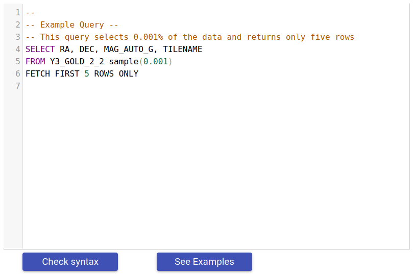
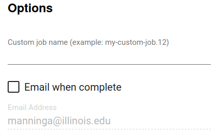

Database Query¶
The database access page allows you to submit your own OracleDB queries directly to the database.
Use the query editor to compose your database query. The See examples button provides some example queries to explore and copy into the editor. Before submitting a job, you may use the Check syntax to validate your query syntax to avoid failed jobs due to typos.
To see results as quickly as possible, you can select Quick query. Query results are truncated at 1000 rows, and the processing time is limited to 30 seconds. Results are displayed at the bottom of the page.
For larger queries, you must specify an output file name, indicating the desired file format. Options include CSV, H5, and FITS. You may optionally choose to compress the CSV and H5 files.

Specifying a custom job name can help make it easier to filter the job list on the Job Status page to find one or more jobs.
To be notified when your job is complete, select the Email when Complete option and ensure that the email address is correct.
